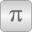
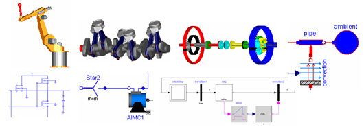

ModelicaModelica Standard Library - Version 3.2.3 |
Package Contents
|
User's Guide |
|
|
Library of basic input/output control blocks (continuous, discrete, logical, table blocks) |
|
|
Library of basic input/output control blocks with Complex signals |
|
|
Library of hierarchical state machine components to model discrete event and reactive systems |
|
|
Library of electrical models (analog, digital, machines, multi-phase) |
|
|
Library of magnetic models |
|
|
Library of 1-dim. and 3-dim. mechanical components (multi-body, rotational, translational) |
|
|
Library of 1-dim. thermo-fluid flow models using the Modelica.Media media description |
|
|
Library of media property models |
|
|
Library of thermal system components to model heat transfer and simple thermo-fluid pipe flow |
|
|
Library of mathematical functions (e.g., sin, cos) and of functions operating on vectors and matrices |
|
|
Library of complex mathematical functions (e.g., sin, cos) and of functions operating on complex vectors and matrices |
|
|
Library of utility functions dedicated to scripting (operating on files, streams, strings, system) |
|
|  |
Library of mathematical constants and constants of nature (e.g., pi, eps, R, sigma) |
|
Library of icons |
|
|
Library of type and unit definitions based on SI units according to ISO 31-1992 |
Information
This information is part of the Modelica Standard Library maintained by the Modelica Association.
Package Modelica® is a standardized and free package that is developed together with the Modelica® language from the Modelica Association, see https://www.Modelica.org. It is also called Modelica Standard Library. It provides model components in many domains that are based on standardized interface definitions. Some typical examples are shown in the next figure:

For an introduction, have especially a look at:
- Overview provides an overview of the Modelica Standard Library inside the User's Guide.
- Release Notes summarizes the changes of new versions of this package.
- Contact lists the contributors of the Modelica Standard Library.
- The Examples packages in the various libraries, demonstrate how to use the components of the corresponding sublibrary.
This version of the Modelica Standard Library consists of
- 1288 component models and blocks,
- 404 example models, and
- 1227 functions
that are directly usable (= number of public, non-partial, non-internal and non-obsolete classes). It is fully compliant to Modelica Specification Version 3.2 Revision 2 and it has been tested with Modelica tools from different vendors.
Licensed by the Modelica Association under the 3-Clause BSD License
Copyright © 1998-2019, Modelica Association and contributors.
This Modelica package is free software and the use is completely at your own risk; it can be redistributed and/or modified under the terms of the 3-Clause BSD license. For license conditions (including the disclaimer of warranty) visit https://modelica.org/licenses/modelica-3-clause-bsd.
Modelica® is a registered trademark of the Modelica Association.